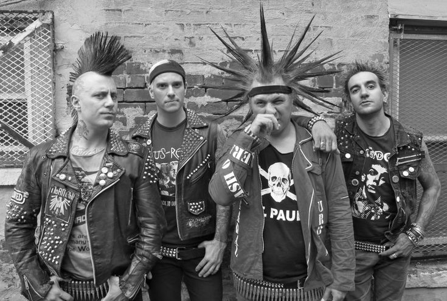
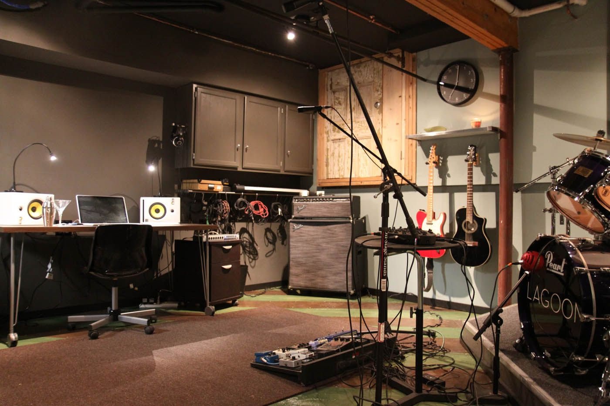
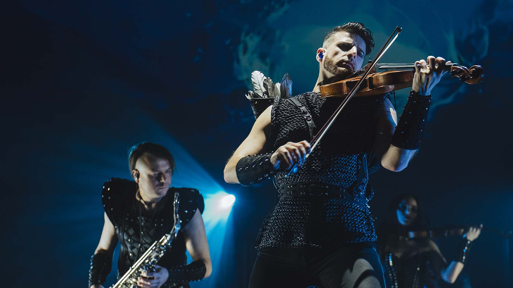
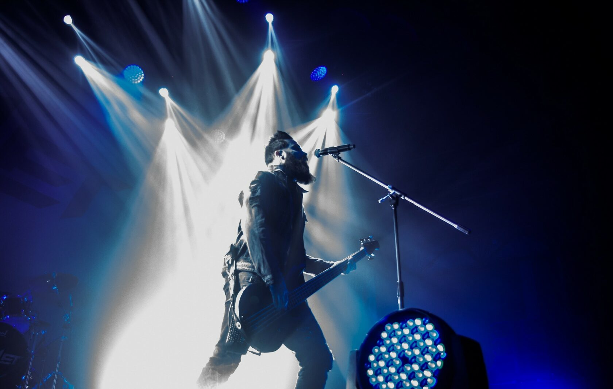

Всё, что нужно для
Здесь собрались самые лютые фанаты тяжёлого рока и металла!
Хоть эти направления уже не совсем являются современными, миллионы людей помогают им держаться на плову и сохранять культовость многих легендарных групп и рок-исполнителей.
Интересные факты

Самый масштабный рок-концерт в мировой истории был проведён
31 декабря 1994 года на знаменитом пляже Рио-де-Жанейро
Копакабана с выступлением знаменитой рок-звезды Рода Стюарта.
Организатором новогоднего шоу выступил MTV.
А послушать легендарные хиты собралось более 4-х миллионов поклонников.
Это абсолютный рекорд, который даже попал в "Книгу Рекордов Гиннесса"!
Самый масштабный рок-концерт в мировой истории был проведён
31 декабря 1994 года на знаменитом пляже Рио-де-Жанейро
Копакабана с выступлением знаменитой рок-звезды Рода Стюарта.
Организатором новогоднего шоу выступил MTV.
А послушать легендарные хиты собралось более 4-х миллионов поклонников.
Это абсолютный рекорд, который даже попал в "Книгу Рекордов Гиннесса"!
| Панк-рок |  |
|---|---|
| Гаражный рок |  |
| Симфонический рок |  |
| Альтернативный рок |  |